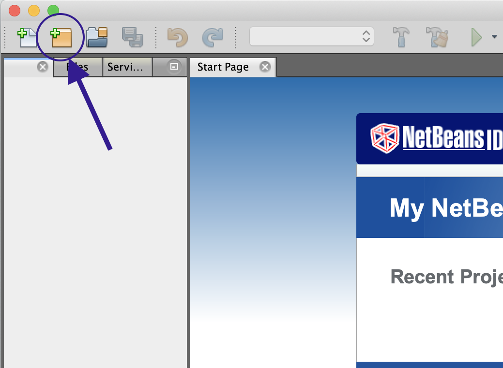
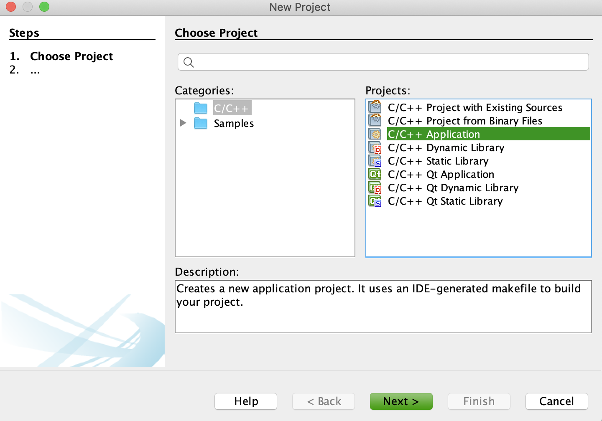

preliminary step (jdk download)
☆ note: you can skip this step if you already have the java developer kit installed.
1. download the java developer kit (jdk 8) from the following link:
https://www.oracle.com/java/technologies/javase/javase-jdk8-downloads.html
☆ note: for some reason on mac os, i had to download jdk version 8 specifically!! the newest release did not work for me!!
2. you will have to create an account for the jdk 8 ): i just entered some random inputs for the technical details:
3. the download should then automatically start. install it.
installation steps
1. download netbeans 8.2 from the following link:
https://netbeans.org/downloads/8.2/rc/
☆ note: it MUST be netbeans 8.2, as this is the easiest version to download that supports c++!
2. download from the c++ column, as shown below:

3. (YOU ARE DONE IF YOU GOT NO ERRORS! stop here.) if your installation is seamless, great! you’re good to go. but i got an error message:

4. click “exit.” the installation should be successful. now comes the fun part!!!
5. the issue is netbeans is not finding the correct location of our jdk. we will need to go in and redirect it.
6. so first step: locate the location of that jdk 8! go to mac’s finder
7. in the top toolbar, click go > go to folder…
8. type /Library (the L needs to be capital!!!)
9. now go to Java > JavaVirtualMachines > jdk1.8.0_261.jdk > Contents
10. right-click the Home folder
11. in the right-click menu, press and hold the option key on your mac and click Copy "Home" as Pathname
12. now go to your applications. find the netbeans folder, and right-click the netbeans app
13. click Show Package Contents
14. now go to Contents > Resources > NetbBeans > etc
15. right-click neatbeans.conf and open with TextEdit
16. scroll down to the bottom. here you will see something like:
netbeans_jdkhome=“[ there’s some file path here ]”
replace (paste) the jdk's path we copied in step 11 inside the quotations. the correct version should look something like:
netbeans_jdkhome=“/Library/Java/JavaVirtualMachines/jdk1.8.0_261.jdk/Contents/Home"
17. and exit. now start netbeans -- it should be working!!!
☆ note: if not, then copy & paste remaining errors into google & go deep dive into stack overflow articles
basic use
1. launch netbeans
2. click the orange folder at the top right with the little plus sign (create new project):
3. under categories, select c/c++ under projects, then select c/c++ application
☆ note: it is SUPER important you select c/c++ application!!!
4. click next. on the following location, be sure to change the project location to a place on your computer where you can easily find it, and click finish
5. in the left panel now, you should see your application. expand source files and you should see a main.cpp. double click that, and start coding!

6. once you have written your program, click the green play button (to the right of the “Debug” dropdown) to compile & run the program. (if you get any errors about a debugger tool missing at any point, just exit and don’t worry about it)
& that is it! happy coding!! :D